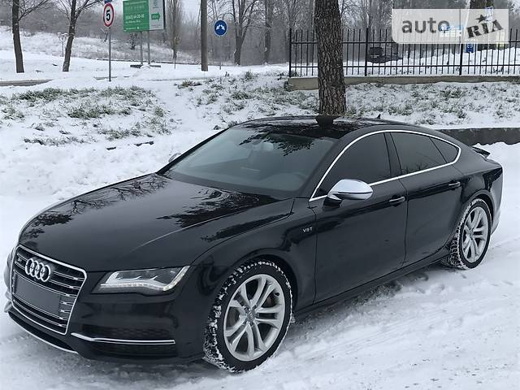

Audi A7
 Audi A7 je izvršni automobil proizveden od strane Audija 2010. godine. Liftbek sa petoro vrata, sa kosim krovom, sa strmim zadnjim staklom i integrisanim poklopcem prtljažnika (formirajući takozvani "Sportbek") i četiri vrata bez okvira.
Audi A7 je izvršni automobil proizveden od strane Audija 2010. godine. Liftbek sa petoro vrata, sa kosim krovom, sa strmim zadnjim staklom i integrisanim poklopcem prtljažnika (formirajući takozvani "Sportbek") i četiri vrata bez okvira.
Audi Sportbek koncept (2009)
 Audi Sportbek koncept je konceptno vozilo koje pokreće 3.0-litarski V6 TDI čist dizel motor 225 PS (165 kW; 222 hp) i 550 Nm (406 lbfft) obrtnog momenta. Poseduje sedmobrzinski S tronik menjač, kvatro sistem stalnog pogona na sva četiri točka, prednje vešanje sa pet spojnica, amortizere za kontrolu kontinualnog prigušenja, elektromehaničko upravljanje, keramičke kočione diskove (380 mm napred i 356 mm pozadi), prednji šestoklipni monoblok aluminijumsku kočnu čeljust, kočnice sa zadnjim plivajućim čeljustima i 21-inčni točkovi.
Audi Sportbek koncept je konceptno vozilo koje pokreće 3.0-litarski V6 TDI čist dizel motor 225 PS (165 kW; 222 hp) i 550 Nm (406 lbfft) obrtnog momenta. Poseduje sedmobrzinski S tronik menjač, kvatro sistem stalnog pogona na sva četiri točka, prednje vešanje sa pet spojnica, amortizere za kontrolu kontinualnog prigušenja, elektromehaničko upravljanje, keramičke kočione diskove (380 mm napred i 356 mm pozadi), prednji šestoklipni monoblok aluminijumsku kočnu čeljust, kočnice sa zadnjim plivajućim čeljustima i 21-inčni točkovi.
Vozilo je otkriveno 2009. godine na auto šou u Detroitu.
Prva generacija (Tip 4G8; 2010-danas)
Početno izdanje
 A7 je u osnovi sa četiri vrata fastbek verzija serije C7 Audi A6, bazirana na Folksvagenovoj MLB platformi. A7 je izdat pre konvencionalnog audi A6 sedana/karavana.Oba automobila imaju istu strukturu jezgra, pogon, šasiju, kontrolnu tablu i enterijer, dok A7 ima sopstvenu jedinstvenu spoljašnju ploču. Takođe se razlikuje od A6 po tome što koristi aluminijum za većinu prednje strukture karoserije. A7 je takođe bio prvi fastbek koji se pojavio u seriji Audija C-platforme od Avant verzije C2 Audi 100, koji je ukinut 1982. godine.
A7 je u osnovi sa četiri vrata fastbek verzija serije C7 Audi A6, bazirana na Folksvagenovoj MLB platformi. A7 je izdat pre konvencionalnog audi A6 sedana/karavana.Oba automobila imaju istu strukturu jezgra, pogon, šasiju, kontrolnu tablu i enterijer, dok A7 ima sopstvenu jedinstvenu spoljašnju ploču. Takođe se razlikuje od A6 po tome što koristi aluminijum za većinu prednje strukture karoserije. A7 je takođe bio prvi fastbek koji se pojavio u seriji Audija C-platforme od Avant verzije C2 Audi 100, koji je ukinut 1982. godine.
Vozila su krenula u prodaju u jesen 2010. Rani modeli uključuju 2.8 FSI (204 PS (150 kW; 201 hp)) sa multitronikom, 3.0 TFSI kvatro (300 PS (221 kW; 296 hp)) sa sedam brzina S tronik, 3.0 TDI kvatro (245 PS (180 kW; 242 hp)) sa sedam brzina S tronik; zatim 3.0 TDI (204 PS (150 kW; 201 hp)) sa multitronikom.
 Model A7 iz 2011. godine uvodi fleksrej brze baze podataka koje kontrolišu sve sisteme pomoći vozaču iz A8-ce, ali dodaje gornji displej i pomoć za aktivnu traku. Puni LED farovi sa automatskim prebacivanjem dugih svetala ili sa Audi adaptivnim svetlom (Ksenon) sa promenljivom kontrolom dometa prednjih svetala.
Model A7 iz 2011. godine uvodi fleksrej brze baze podataka koje kontrolišu sve sisteme pomoći vozaču iz A8-ce, ali dodaje gornji displej i pomoć za aktivnu traku. Puni LED farovi sa automatskim prebacivanjem dugih svetala ili sa Audi adaptivnim svetlom (Ksenon) sa promenljivom kontrolom dometa prednjih svetala.
Američki modeli otišli su u prodaju za ovaj model 2012 godine. Raniji modeli uključuju 3.0 TFSI kvatro(310 PS (228 kW; 306 hp)) sa automatskim menjačem sa osam brzina.
Audi S7 (2012–2017)
S7 je verzija A7 sa 4,0 L (3.993 cc) biturbo TFSI V8 motorom 420 PS (309 kW; 414 hp) i 550 N⋅m (406 lbf⋅ft) obrtnim momentom, kao i sa kvatro sistem pogona na četiri točka i tronik menjač sa sedam brzina. S7 može ubrzati od 0 do 100km/h za 4,7 sekundi. Vozilo je predstavljeno na sajmu automobila u Frankfurtu 2011. godine, i kasnije u 2012. za Audi kvatro kup.
Isporuka S7-ce je počela u proleće 2012. godine
A7 Sportbek crno izdanje (2013–)
 A7 Sportbek Blek Edicija je verzija A7 (isključujući 3.0 TDI (204 KS (150 kV; 201 KS), S7) za tržište Velike Britanije. Uključuje 21-inčne aluminijumske točkove dizajna rotora sa tamnim titanijumskim završnim slojem sa daljim spuštanjem sportske suspenzije S linije, crna rešetka i broj ploča okružuju i trake okvira prozora, kao i staklo privatnosti koje se pruža od B-stuba nazad; Piano Blek, sportska sedišta obložena crnom kožom Valkona, crna obloga, Bos audio sistem sa DAB radiom i AMI iz SE specifikacija i iznad, paket opreme S linije (satelitska navigacija, senzori za svetlo i kišu, Ksenon farovi za sva vremena i LED zadnja svetla, Audi drajv selekt sistem prilagodljive dinamike, Audi parking sistem plus), pogon na vratima prtljažnika, električno podesiva prednja sedišta i pokretni zadnji spojler.
A7 Sportbek Blek Edicija je verzija A7 (isključujući 3.0 TDI (204 KS (150 kV; 201 KS), S7) za tržište Velike Britanije. Uključuje 21-inčne aluminijumske točkove dizajna rotora sa tamnim titanijumskim završnim slojem sa daljim spuštanjem sportske suspenzije S linije, crna rešetka i broj ploča okružuju i trake okvira prozora, kao i staklo privatnosti koje se pruža od B-stuba nazad; Piano Blek, sportska sedišta obložena crnom kožom Valkona, crna obloga, Bos audio sistem sa DAB radiom i AMI iz SE specifikacija i iznad, paket opreme S linije (satelitska navigacija, senzori za svetlo i kišu, Ksenon farovi za sva vremena i LED zadnja svetla, Audi drajv selekt sistem prilagodljive dinamike, Audi parking sistem plus), pogon na vratima prtljažnika, električno podesiva prednja sedišta i pokretni zadnji spojler.
Prodaja je počela u novembru 2012. godine, a isporuke su počele početkom 2013. godine.
RS 7 (2013–2019)
 RS 7 ima dvostruki turbo V8 motor od 4,0 TFSI sa dvostrukim kretanjem od 412 kV (560 KS; 553 KS) i obrtnim momentom od 700 Nm (516 lbffft), kao i sistemom na zahtev motora koji deaktivira usisne i ispustne ventile četiri cilindra (2, 3, 5 i 8), tiptronik transmisija sa osam brzina za D i S režim vožnje, kvatro sa vektorom obrtnog momenta sa centralnim diferencijalom sa zaključavanjem i visokim stepenom blokade i hladnjakom ulja (opcionalno kvatro sa sportskim diferencijalom sa dva superpozicionirana zupčanika), polirani 20-inčni kovani diskovi sa sedam dvostrukih krakova (opcioni 21-inčni točkovi u izboru od tri dizajna), četiri diska prečnika sa unutrašnjim ventilisanjem sa prednjim diskovima prečnika 390 mm (15,4 inča) i crnim (opcionalno crvenim) obojenim šestoklipnim čeljustima (opcionalno 420 mm , 5 in) keramički diskovi od ugljeničnih vlakana sa antrakit sivim čeljustima), elektronska kontrola stabilizacije sa Sport i of modovima, adaptivno vazdušno spuštanje karoserije za 20 mm (0,79) (opciono tauter sportsko vešanje uz Dinamik Rajd Kontrol),
RS 7 ima dvostruki turbo V8 motor od 4,0 TFSI sa dvostrukim kretanjem od 412 kV (560 KS; 553 KS) i obrtnim momentom od 700 Nm (516 lbffft), kao i sistemom na zahtev motora koji deaktivira usisne i ispustne ventile četiri cilindra (2, 3, 5 i 8), tiptronik transmisija sa osam brzina za D i S režim vožnje, kvatro sa vektorom obrtnog momenta sa centralnim diferencijalom sa zaključavanjem i visokim stepenom blokade i hladnjakom ulja (opcionalno kvatro sa sportskim diferencijalom sa dva superpozicionirana zupčanika), polirani 20-inčni kovani diskovi sa sedam dvostrukih krakova (opcioni 21-inčni točkovi u izboru od tri dizajna), četiri diska prečnika sa unutrašnjim ventilisanjem sa prednjim diskovima prečnika 390 mm (15,4 inča) i crnim (opcionalno crvenim) obojenim šestoklipnim čeljustima (opcionalno 420 mm , 5 in) keramički diskovi od ugljeničnih vlakana sa antrakit sivim čeljustima), elektronska kontrola stabilizacije sa Sport i of modovima, adaptivno vazdušno spuštanje karoserije za 20 mm (0,79) (opciono tauter sportsko vešanje uz Dinamik Rajd Kontrol), opciono dinamičko upravljanje na svim točkovima sa neprekidno promenljivim pojačanjem i promerom upravljanja, crna zaštitna rešetka sa visokim sjajem sa saćastom strukturom na prednjem delu automobila, dodatni delovi u matiranom aluminijumu, spojler za proširenje snage, dva eliptična poklopca ispusne cevi, izbor deset boja karoserije (uključujući Nardo siva, ekskluzivna završna obrada Daitona siva, mat efekat), opciono matirane aluminijumske i karbonske stajling pakete, oslonac za noge, pedale i soft tipke u standardu MMI navigacija plus terminal u aluminijskom izgledu; ukrasne letvice ispod monitora koji se uvlače u završnoj obradi klavira, ugljenični umetci (četiri dodatna materijala), obloženi crnom tkaninom (opciono lunarno srebrna ili crna Alkantara), sportska sedišta RS sa bočnim nosačima i integrisanim naslonima za glavu i RS 7 logotip presvučeni crnom Alkantarom i koža sa dijamantskim prošivom u središnjim delovima (opciono Valkona kožno saće u crnoj ili lunarnoj srebrnoj boji), opciono prilagodljiva sedišta sa funkcijom memorije, konturna zadnja sedišta, ksenon plus prednja svetla, sistem za nadzor pritiska u pneumaticima, sistem parkinga plus, tri zone automatski klima uređaj, tempomat, Audi zvučni sistem, MMI navigacija plus, adaptivni tempomat sa Start-stop sistemom uključujući Audi persens front.
opciono dinamičko upravljanje na svim točkovima sa neprekidno promenljivim pojačanjem i promerom upravljanja, crna zaštitna rešetka sa visokim sjajem sa saćastom strukturom na prednjem delu automobila, dodatni delovi u matiranom aluminijumu, spojler za proširenje snage, dva eliptična poklopca ispusne cevi, izbor deset boja karoserije (uključujući Nardo siva, ekskluzivna završna obrada Daitona siva, mat efekat), opciono matirane aluminijumske i karbonske stajling pakete, oslonac za noge, pedale i soft tipke u standardu MMI navigacija plus terminal u aluminijskom izgledu; ukrasne letvice ispod monitora koji se uvlače u završnoj obradi klavira, ugljenični umetci (četiri dodatna materijala), obloženi crnom tkaninom (opciono lunarno srebrna ili crna Alkantara), sportska sedišta RS sa bočnim nosačima i integrisanim naslonima za glavu i RS 7 logotip presvučeni crnom Alkantarom i koža sa dijamantskim prošivom u središnjim delovima (opciono Valkona kožno saće u crnoj ili lunarnoj srebrnoj boji), opciono prilagodljiva sedišta sa funkcijom memorije, konturna zadnja sedišta, ksenon plus prednja svetla, sistem za nadzor pritiska u pneumaticima, sistem parkinga plus, tri zone automatski klima uređaj, tempomat, Audi zvučni sistem, MMI navigacija plus, adaptivni tempomat sa Start-stop sistemom uključujući Audi persens front.
RS 7 može ubrzati od 0 do 100 km / h za 2,9 sekundi i ograničen je na 250 km / h. Opcioni dinamički paket i dinamičan paket plus povećavaju maksimalne brzine na 280 km / h (174 mph) i 305 km / h (190 mph).
Ostale opcije uključuju spoljašnja ogledala sa izloženim ugljeničnim kućištima i ol-LED farove, gornji displej, komforni paket, dinamički paket, dinamički paket plus, Blutut onlajn telefon, Beng Saund Sistem.
Vozilo je otkriveno 2013. godine za NAIAS.
 Audi je 22. oktobra 2015. godine objavio performanse RS 7 zajedno sa performansom RS 6.Pokreće ga isti 4.0-litarski tvin-turbo V8 motor kao standardni RS 7, ali sada sa 605 KS (445 kV; 597 KS) na 6.100-6.800 o / min i 750 Nm (553 lbf) obrtni momenat na 2.500-5.500 o / min.Maksimalna brzina ostaje ograničena na 250 km / h kao standard, a tu su i opcioni dinamik i dinamik Plus paketi koji povećavaju maksimalnu brzinu na 280 km / h (174 mph) i 305 km / h (190 mph). RS 7 performanse će ubrzati od 0 do 100 km / h (0 do 62 mph) za 3,7 sekundi i od 0 do 200 km / h za 12,1 sekundi. Uprkos poboljšanim performansama, ušteda goriva nepromenjene su u odnosu na standard RS 6.
Audi je 22. oktobra 2015. godine objavio performanse RS 7 zajedno sa performansom RS 6.Pokreće ga isti 4.0-litarski tvin-turbo V8 motor kao standardni RS 7, ali sada sa 605 KS (445 kV; 597 KS) na 6.100-6.800 o / min i 750 Nm (553 lbf) obrtni momenat na 2.500-5.500 o / min.Maksimalna brzina ostaje ograničena na 250 km / h kao standard, a tu su i opcioni dinamik i dinamik Plus paketi koji povećavaju maksimalnu brzinu na 280 km / h (174 mph) i 305 km / h (190 mph). RS 7 performanse će ubrzati od 0 do 100 km / h (0 do 62 mph) za 3,7 sekundi i od 0 do 200 km / h za 12,1 sekundi. Uprkos poboljšanim performansama, ušteda goriva nepromenjene su u odnosu na standard RS 6.
Druga generacija (Tip 4K8; 2018–danas)
 Druga generacija modela A7 otkrivena je u oktobru 2017. godine, zvanično lansirana u Nemačkoj u februaru 2018. godine, a prodaje se u Evropi od kraja 2017. godine i debitovao je na severnoameričkom tržištu Nort Amerikan Internešnal Auto Šou u Detroitu 12. januara 2018. godine.Proizvodnja je počela u februaru 2018. godine u Audijevoj fabrici Nekarsulmu.
Druga generacija modela A7 otkrivena je u oktobru 2017. godine, zvanično lansirana u Nemačkoj u februaru 2018. godine, a prodaje se u Evropi od kraja 2017. godine i debitovao je na severnoameričkom tržištu Nort Amerikan Internešnal Auto Šou u Detroitu 12. januara 2018. godine.Proizvodnja je počela u februaru 2018. godine u Audijevoj fabrici Nekarsulmu.
Motor